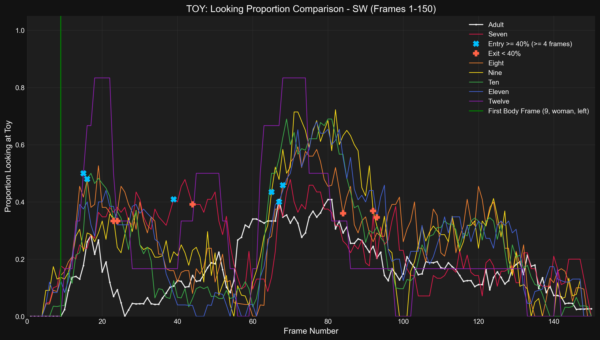
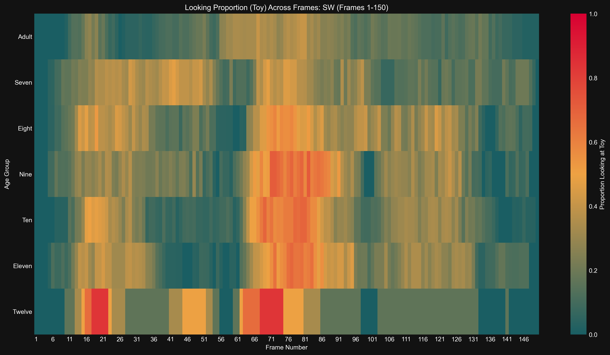

Generated: 2025-04-24 17:38:11
Time series of proportion looking at Toy for Adult
Results (Adult):- Entry (≥40%): No sustained entry found.
Time series of proportion looking at Toy for Seven
Results (Seven):- Entry (≥40%, ≤F75): Frame 39- Exit (<40%): Frame 44- Duration (≥40%): 5 frames- Latency (from body frame): 30 frames
Time series of proportion looking at Toy for Eight
Results (Eight):- Entry (≥40%, ≤F75): Frame 68- Exit (<40%): Frame 87- Duration (≥40%): 19 frames- Latency (from body frame): 59 frames
Time series of proportion looking at Toy for Nine
Results (Nine):- Entry (≥40%, ≤F75): Frame 65- Exit (<40%): Frame 92- Duration (≥40%): 27 frames- Latency (from body frame): 56 frames
Time series of proportion looking at Toy for Ten
Results (Ten):- Entry (≥40%, ≤F75): Frame 16- Exit (<40%): Frame 23- Duration (≥40%): 7 frames- Latency (from body frame): 7 frames
Time series of proportion looking at Toy for Eleven
Results (Eleven):- Entry (≥40%, ≤F75): Frame 67- Exit (<40%): Frame 96- Duration (≥40%): 29 frames- Latency (from body frame): 58 frames
Time series of proportion looking at Toy for Twelve
Results (Twelve):- Entry (≥40%, ≤F75): Frame 15- Exit (<40%): Frame 24- Duration (≥40%): 9 frames- Latency (from body frame): 6 frames
Detailed time series comparing proportion looking at Toy across age groups.
Bar plot showing latency from body frame to >=40% entry (entry <= F75) looking at Toy for sw
Results (Latency in Frames, 0 if no valid entry ≤F75): seven: 30, eight: 59, nine: 56, ten: 7, eleven: 58, twelve: 6, adult: 0
Bar plot showing duration >= 40% (entry <= F75) looking at Toy for sw
Results (Duration in Frames, 0 if no valid entry ≤F75): seven: 5, eight: 19, nine: 27, ten: 7, eleven: 29, twelve: 9, adult: 0
Bar chart comparing mean proportion looking at Toy across age groups.
Results (Mean Proportion): Seven: 0.239, Eight: 0.262, Nine: 0.265, Ten: 0.243, Eleven: 0.255, Twelve: 0.259, Adult: 0.166
Heatmap showing proportion looking at Toy across frames and age groups.
